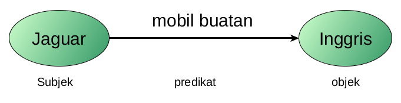
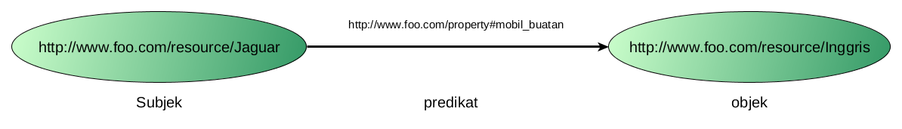
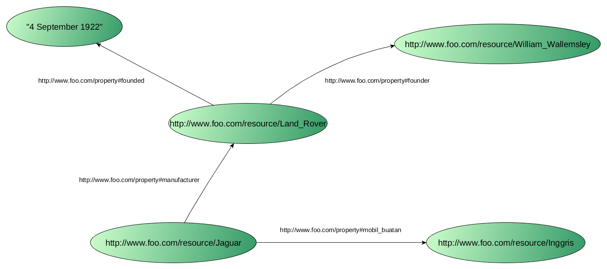
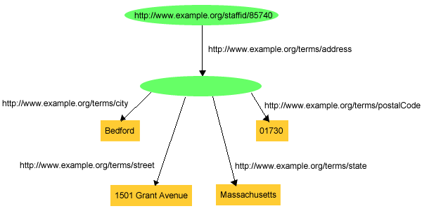

WORKSHOP SEMANTIC WEB
Resource Description Framework
oleh
Syamsul Muttaqin
Anotasi konsep
”Jaguar adalah mobil buatan Inggris”
...dalam bentuk XML
<mobil>
<merek>jaguar</merek>
<buatan>Inggris</buatan>
</mobil><mobil merek="jaguar">
<buatan>Inggris</buatan>
</mobil><mobil merek="jaguar" buatan="inggris"/>The problems is...
- Struktur representasi data (mungkin) tidak seragam
- Setiap orang dapat menggunakan istilah yang berbeda untuk merepresentasikan konsep yang sama
- Mesin harus mampu mengenali struktur representasi yang berbeda (menggunakan XSLT)
Resource description framework
- Standarisasi cara merepresentasikan knowledge
- Pengetahuan direpresentasikan dalam bentuk statement
- Setiap statement terdiri dari subjek, predikat dan objek
- Kumpulan triple statement membentuk graph
Resource description framework
”Jaguar adalah mobil buatan Inggris”

- Subjek dan predikat harus berbentuk URI
- Objek dapat berupa URI atau Literal
Resource description framework
”Jaguar adalah mobil buatan Inggris”

Resource description framework
RDF Serialization
- RDF/XML
- Turtle
- N3
- N-Triple
- JSON-LD
RDF Statement
- rdf:Description
- rdf:about
- rdf:resource
- rdf:ID
-
Collection
- rdf:Bag
- rdf:Seq
- rdf:Alt
- Blank Node
- Reification
Blank node adalah resource yang tidak memiliki alamat global sehingga hanya dapat diakses dalam internal RDF
rdf:Bag adalah kontainer untuk mendefinisikan node yang berupa unordered list
rdf:Seq adalah kontainer untuk mendefinisikan node yang berupa ordered list

rdf:Alt adalah kontainer untuk mendefinisikan node-node alternatif dari sebuah statement
RDF in XML Serialization
<?xml version="1.0" encoding="UTF-8" ?>
<rdf:RDF
xmlns:rdf="http://www.w3.org/1999/02/22-rdf-syntax-ns#"
xmlns:univ="http://www.semanticweb.org/workshop/2016/ontologies/university#">
<rdf:Description rdf:about="http://www.semanticweb.org/workshop/2016/ontologies/university#Universitas_Gadjah_Mada">
<univ:alamat>Bulaksumur, Yogyakarta</univ:alamat>
<univ:telp>(0274) 588688</univ:telp>
</rdf:Description>
<rdf:Description rdf:about="http://www.semanticweb.org/workshop/2016/ontologies/university#MIPA">
<univ:institusi rdf:resource="http://www.semanticweb.org/workshop/2016/ontologies/university#Universitas_Gadjah_Mada"/>
<univ:alamat>Bulaksumur, Yogyakarta</univ:alamat>
<univ:telp>(0274) 588688</univ:telp>
</rdf:Description>
</rdf:RDF>RDF in Turtle Serialization
@prefix rdf: <http://www.w3.org/1999/02/22-rdf-nd-syntax#> .
@prefix xsd: <http://www.w3.org/2001/XMLSchema#> .
@prefix : <http://www.semanticweb.org/workshop/2016/ontologies/university#> .
:Universitas_Gadjah_Mada rdf:type :Universitas .
:Universitas_Gadjah_Mada :gambar <https://upload.wikimedia.org/wikipedia/en/6/6d/Gadjah_Mada_University_Logo.gif> .
:MIPA a :Fakultas .
:MIPA :institusi :Universitas_Gadjah_Mada .
:MIPA :alamat "Sekip Utara Bulaksumur, Yogyakarta"^^xsd:string .
:MIPA :telp "(0274) 513339"^^rdfs:Literal .